Signes Urbain
Strasbourg
Édition · 2017
Toute ville possède de multiples réseaux de distribution et de signalisation dont elle doit indiquer
la présence ponctuelle tout au long des rues sur les trottoirs et les bâtiments qui les bordent.
Ces indications de la présence d’un point de réseau sont destinées aux techniciens ou au public et autres utilisateurs.
Cela a nécessité la création de signes sous forme de logos ou de pictogrammes très distincts,
aux normes internationales et dont la lecture doit pouvoir rester simple et claire au fil des années.
Cette présentation se décline en 3 reportages ayant choisi des rues de la ville de Strasbourg.
Chaque rue possède une personnalité distincte due à sa situation dans le tissu urbain.
Le reportage fait l’inventaire de manière systématique de tous les signes le long de l’un des deux trottoirs
de la rue en tenant compte de la position de chaque signe et de sa hauteur dans la lecture urbaine.
C’est à travers ce parcours que l’on découvre à livre ouvert un langage jusque là caché,
oublié et majoritairement incompris par les habitants mêmes de ses lieux.
Format : 210x303 mm
44 pages
Impression laser
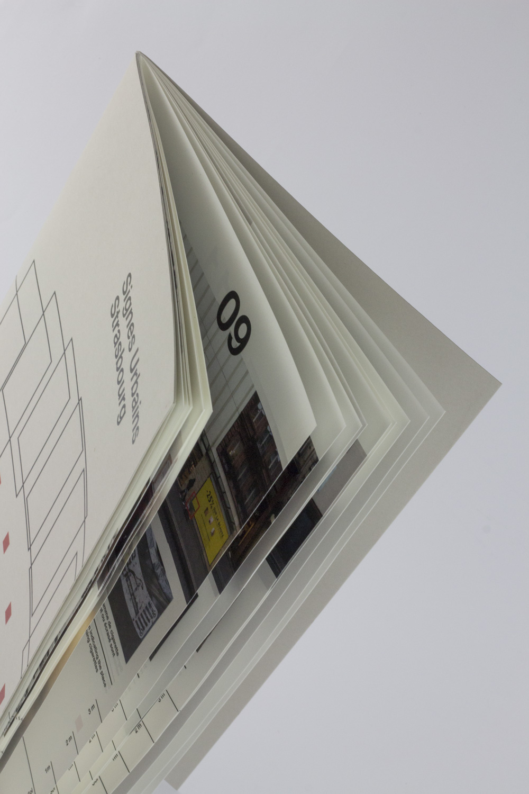
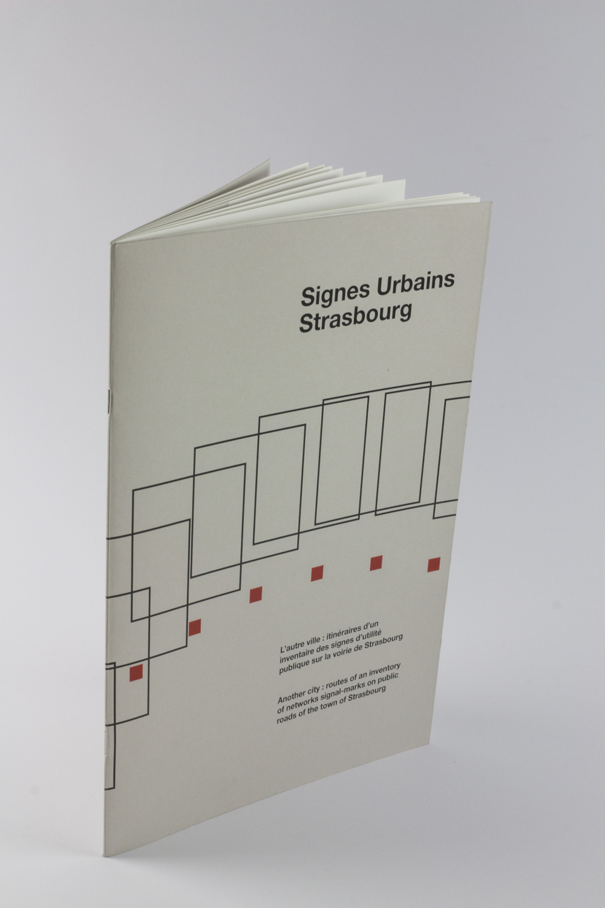
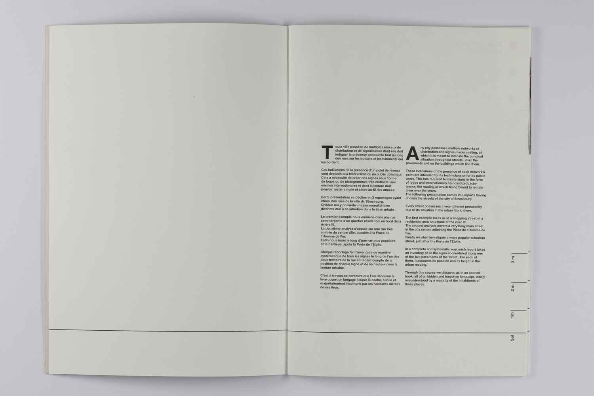
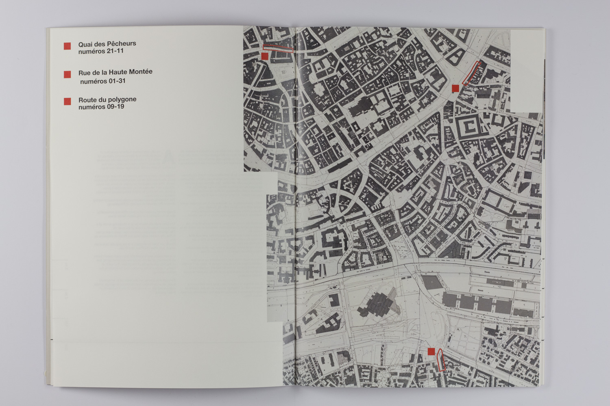
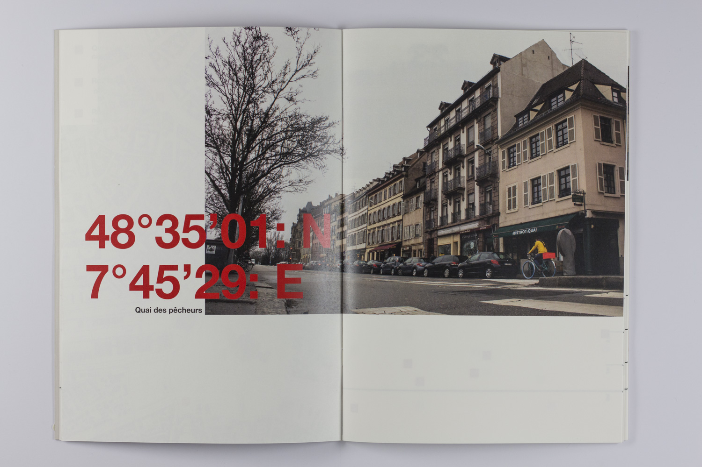
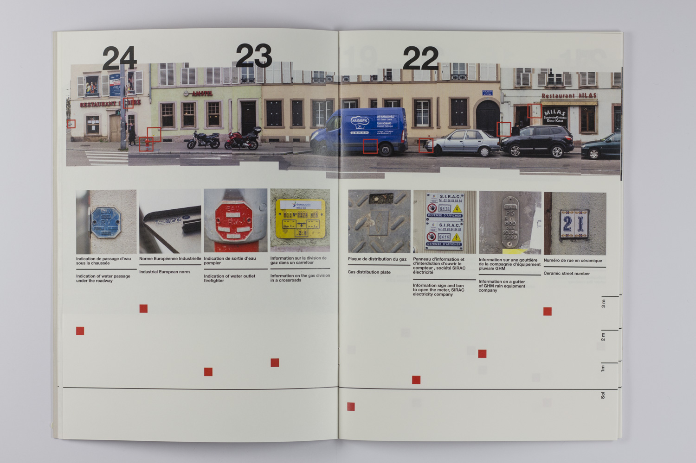
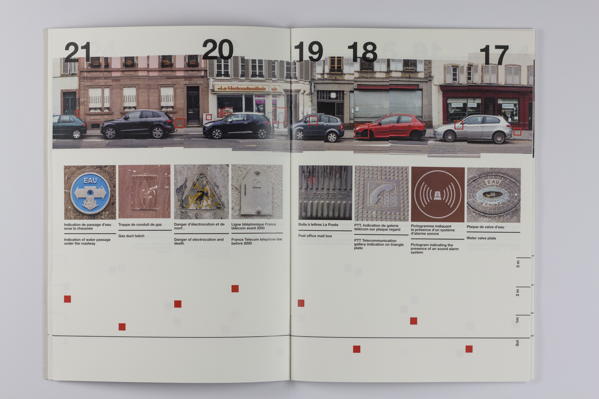
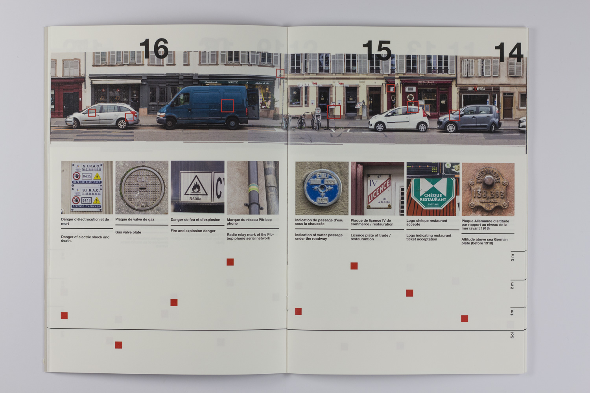
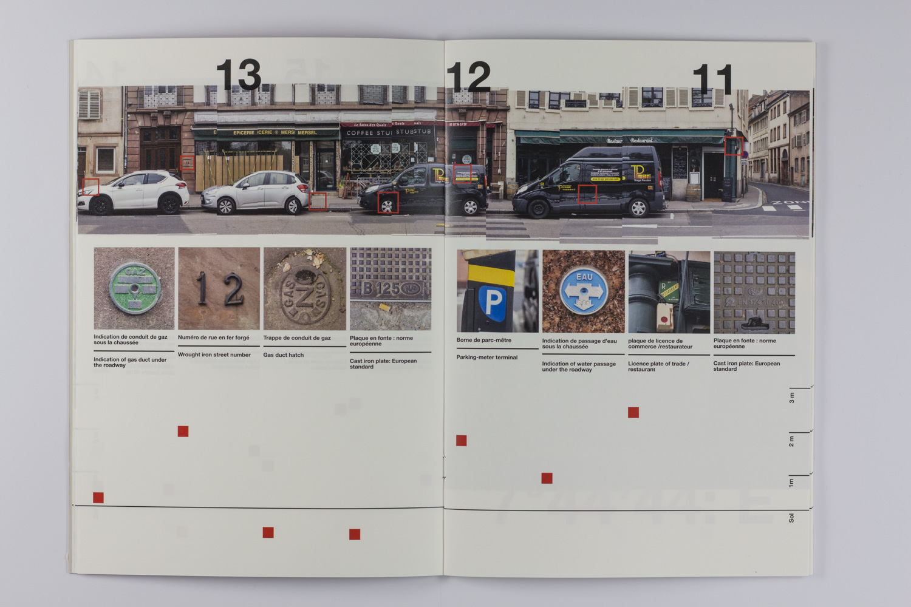
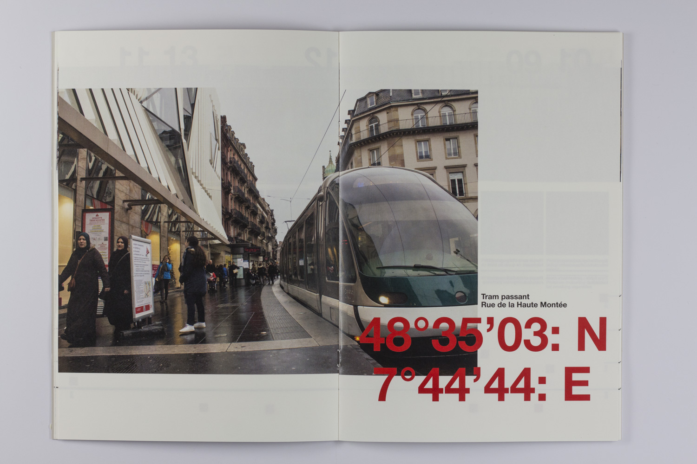
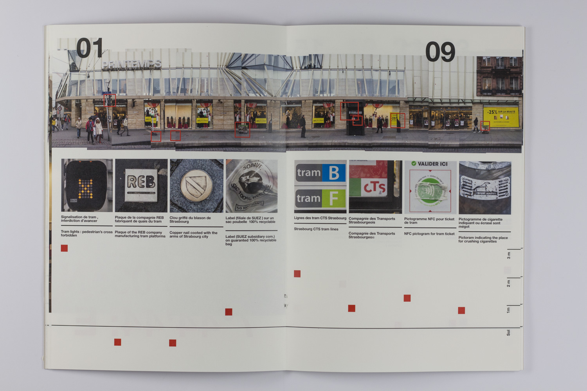
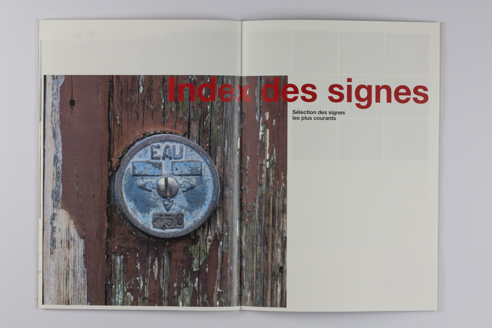
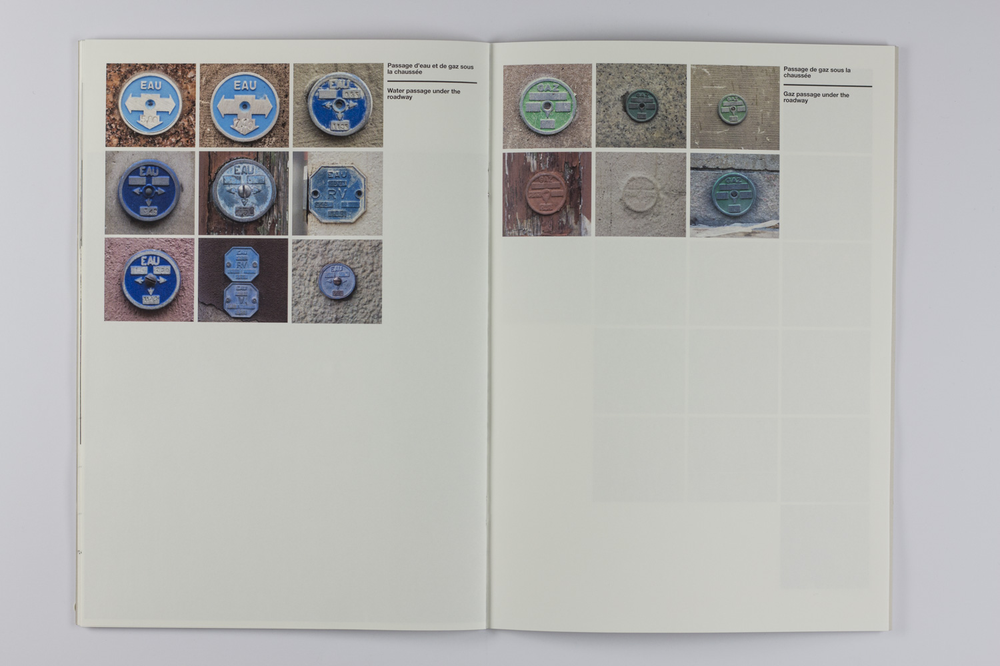
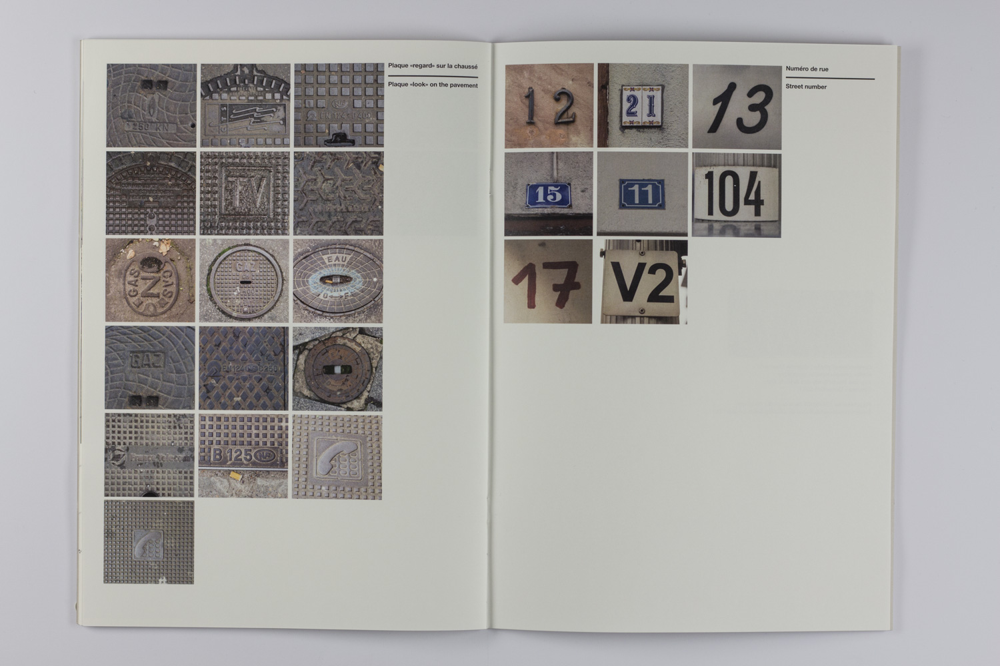
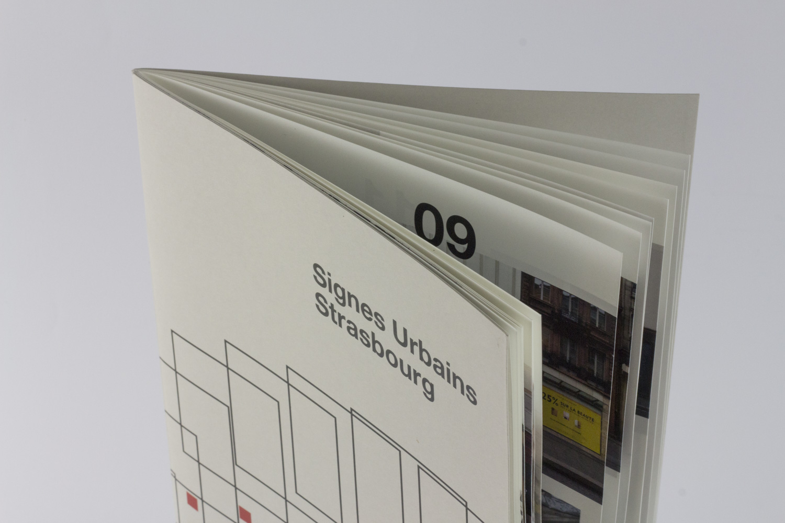